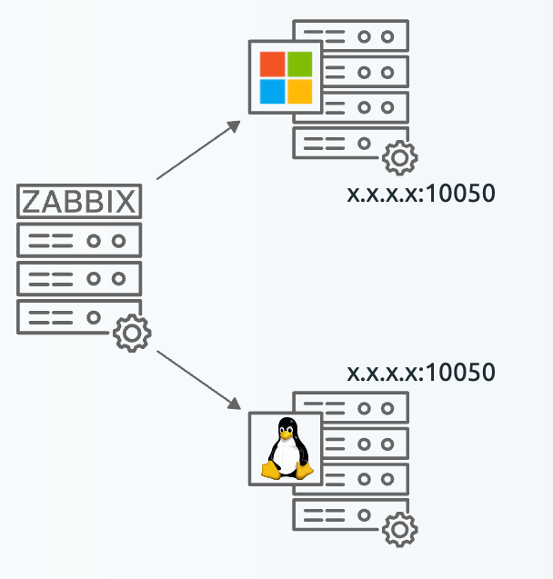

Zabbix Agent installation and Passive monitoring
At this point we are familiar with the Zabbix dataflow, how to create hosts and,
add interfaces and items to a host. As a system administrator or anyone else working
with Linux, Unix or Windows systems usually we jump right into installing the Zabbix
agent and monitoring with it. Using our previous steps however, we have laid the
groundwork for building a proper monitoring solution. We have prepared our systems
before monitoring, which is the most important part to avoid Monitoring fatigue
later on.
Note
Monitoring fatigue and Alert fatigue are two terms heard in monitoring and observability.
Alert fatigue happens in Zabbix when you configure too many (incorrect) triggers. When you flood your dashboards or even external media like Teams or Signal with too many alerts your users will not respond to them any longer.
Monitoring fatigue happens in Zabbix when you misconfigure things like dashboards, items, host groups, tags and other internal systems that keep things structured. The result is that you or your co-workers do not want to use your own system any longer as it does not deliver the right information easily enough.
Now, we are ready to start monitoring an actual system.
Agent basics
We have prepared an example setup in our Book LAB environment.

4.14 Zabbix Agent passive hosts
What we can see here is a setup you might see in any datacenter or office server cabinet. We have a Zabbix server monitoring one Windows server and one Linux server directly (or through a proxy). We call Zabbix a network monitoring solution as it communicates over the network. In Zabbix we have two methods of communication.
- Passive Otherwise known as
polling. We communicate from the Zabbix server (or proxy) towards the monitoring target. The monitoring target is listening on a port waiting for Zabbix to request data. - Active Otherwise known as
trapping. We communicate from the monitoring target towards the Zabbix server (or proxy). The Zabbix server is listening on a port waiting for the monitoring target to send data.
As you can imagine there is quite a big difference between these two methods of communication. Often times it depends on the protocol which method is preferred. For example SNMP traps are always an active type of check.
The Zabbix agent however can communicate in either Active or Passive mode. It can even do those simultaneously. Simultaneous communication can be useful when you want to use Passive mode for all communication, but still want to execute some items that are Active only. Active items can do everything Passive items can do however.
Before we can configure either though, we will have to install our Zabbix agent
first. When installing on Linux and Windows we have a choice between two different
agents, Zabbix agent and Zabbix agent 2. Both of these Zabbix agents are still
in active development and receive both major (LTS) and minor updates. The difference
between them is in Programming language and features.
| Zabbix agent | Zabbix agent 2 | |
|---|---|---|
| Features | No focus to include new features | Supports everything agent 1 does + more |
| Programming language | C | GoLang |
| Extensions | C Loadable Modules | GoLang plugins |
| Platforms | All | Linux and Windows |
| Concurrency | In sequence | Concurrently |
| Storage on outage | No | Sqlite |
| Item timeouts | Agent wide | Per plugin |
Agent installation on Linux
Installation on Linux can be done in one of three ways. Through direct install
files like .rpm and .deb, by building from sources and through packages pulled
from the repository. Installation through the packages is preferred as this means
Zabbix agent will be updated when updating with commands like dnf update and
apt upgrade. Keep in mind, Zabbix agent is a piece of software just like any
other and as such news versions will contain security and bug fixes. Whatever
installation method you choose, keep your Zabbix agent up-to-date.
We will be using the packages on both RedHat-based and Ubuntu to install Zabbix agent 2.
To use the packages we will add the Zabbix repository first.
add zabbix repository
Redhat
rpm -Uvh https://repo.zabbix.com/zabbix/7.2/release/rocky/9/noarch/zabbix-release-latest-7.2.el9.noarch.rpm
dnf clean all
Ubuntu
After adding the repository, we should be able to install Zabbix agent 2.
install Zabbix agent 2 package
Redhat
Ubuntu
After installation make sure to start and enable the Zabbix agent.
Your agent is now installed under the zabbix user and ready to be configured.
On a Linux based system, by default we can find all of the Zabbix configuration
files in /etc/zabbix/. Specifically we want to edit /etc/zabbix/zabbix_agent2.conf.
Agent installation on Windows
On Windows, we have two options to install our Zabbix agent. Through downloading
the .exe file and placing the configuration files in the right location or the
easy option. Downloading the .msi and going through the installation wizard.
Whichever method you prefer, you'll first have to navigate to the Zabbix download
page. We will be using the .msi in our example.
https://www.zabbix.com/download_agents?os=Windows
Here you will be presented with the choice to download either Zabbix agent or
Zabbix agent 2. Choose whichever one you would like to install, but by now we
recommend Zabbix agent 2 as it is stable and includes more features.
Once downloaded, we can open the new zabbix_agent2-x.x.x-windows-amd64-openssl.msi
file and it will take us to the wizard window.
4.15 Zabbix Agent Windows install step 1
Step 1 is a simple welcome screen, nothing to do here except click on Next.

4.15 Zabbix Agent Windows install step 2
For step 2, make sure to read the License Agreement (or don't, we do not give legal advice). Then click Next.

4.15 Zabbix Agent Windows install step 3
For step 3 we have some more actions to execute. By default the Zabbix agent on Windows .msi installer includes Zabbix sender and Zabbix get. These are separate utilities that we do not need on every Windows server. I will not install them now, but we can always use the .msi to install them later. The Zabbix agent will function fine without them.
4.15 Zabbix Agent Windows install step 4
Step 4 is our most important step. Here we will already configure our Zabbix agent configuration file, straight from the .msi installer. Let's make sure to set the Hostname, Zabbix server IP/DNS (192.168.46.6 in our case) and let's also set the Server or proxy for active checks parameter. As you can see we could also immediately configure encryption with the Enable PSK option, but we will do this later.
4.15 Zabbix Agent Windows install step 5
Now there is nothing left to do except press Install and our Zabbix agent will be both installed and configured.
Agent installation on Unix
For Unix based systems, simply download the files on the Zabbix download page for either AIX, FreeBSD, OpenBSD or Solaris.
https://www.zabbix.com/download_agents
Agent installation on MacOS
For MacOS systems, simply download the files on the Zabbix download page and run through the .pkg installer.
https://www.zabbix.com/download_agents?os=macOS
Agent side configuration
Configuring the Zabbix agent is similar for all installations. Whether you are on Linux, Unix, Windows or MacOS you will always find the ../zabbix_agent2.conf file. The parameters in this configuration file are mostly the same, regardless of the operating system.
For Passive Zabbix agent connections we have only one important parameters to configure out of the box. The Server= parameter. This parameter functions as an allowlist, where we can add IP addresses, IP ranges and DNS entries to a list. All of the entries in this Server= allowlist will be allowed to make a connection to the Passive Zabbix agent and collect data from it.
Edit your configuration file to include your Zabbix server (or proxy) IP address, IP range or DNS entry.
As you can see in the example, I've left 127.0.0.1. Although not required, this can be useful in certain situations. Through the use of a comma , we have indicated that both 127.0.0.1 and 192.168.46.30 are allowed to connect. If you are running Zabbix server in HA mode or if you are using Proxy Groups, make sure to include all entries for the Zabbix components that need to connect.
After making changes to the Zabbix agent configuration file, make sure to restart the Windows service. On Linux systems use sytemctl to restart.
If you do not restart, the changes will not take effect.
Zabbix side configuration
On the Zabbix server side we can now create a new host to monitor. Let's call it zbx-agent-passive-rocky or zbx-agent-passive-windows and let's add the interface.
4.20 Zabbix Agent passive Linux host
For Windows it looks similar.

4.21 Zabbix Agent passive Windows host
With the host added, correctly with an interface, we can now start monitoring. To do so, let's create one Zabbix agent item type as an example. For your new host zbx-agent-passive-rocky or zbx-agent-passive-windows in the Zabbix frontend, click on Items and then Create item in the top right corner.
Let's create an item System hostname, making sure that if we have more system items alphabetical sorting will group them together. For Passive Zabbix agent the type Zabbix agent is used and we have to specific an Interface. We will use the item key system.hostname.

4.22 Zabbix Agent passive host item
Do not forget to add the standard Component tag to the item to follow the best practise.
4.23 Zabbix Agent passive host item tag
Conclusion
Installing the Zabbix agent can be done with either Zabbix agent or Zabbix agent 2. By now Zabbix agent 2 is recommended when available, but Zabbix agent is also still fully supported. Make sure to install the Zabbix agent through the most easily secured method and keep it updated.
Once installed, for Passive communication we will use the Server= parameter to keep our agent secured. We do not want everyone to be able to connect to this agent, even when there might still be a firewall or two in between.
Last but not least, keep Active versus Passive in mind. Depending on where the server is located, it might be preferred to open up ports through your firewall(s) incoming our outgoing. Usually we prefer Active communication, because it means we do not have to give a central server (Zabbix server and proxy) access to all our servers. But in specific cases Passive might be preferred.